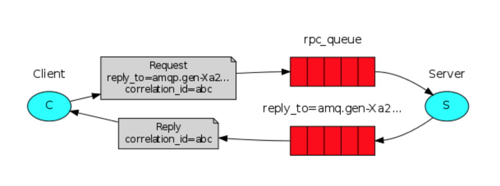

内容摘要
In the second tutorial we learned how to use Work Queues to distribute time-consuming tasks among multiple workers.
But what if we need to run a function on a remote computer and wait for the result? Well, that's a different story. This pattern is commonly known as Remote Procedure Call or RPC.
In this tutorial we're going to use RabbitMQ to build an RPC system: a client and a scalable RPC server. As we don't have any time-consuming tasks that are worth distributing, we're going to create a dummy RPC service that returns Fibonacci numbers.
在第二篇教程中，我们学到了如何使用Work Queues在多个workers中分发耗时任务。
但是如果我们需要运行一个在远端的函数，并等待结果呢？这一部分就是众所周知的RPC(Remote Procedure Call)
这一篇我们将用RabbitMQ来搭建一个RPC系统：一个客户端和一个可伸缩的RPC服务器。由于我们没有任何值得分配的耗时任务，所以我们将创建一个返回斐波纳契数的伪RPC服务。
Client interface
To illustrate how an RPC service could be used we're going to create a simple client class. It's going to expose a method named call which sends an RPC request and blocks until the answer is received:
为了阐述一个RPC服务如何被使用，我们将要创建一个简单的client类，它会暴露出一个叫做call的方法，用来发送一个RPC请求，并且一直阻塞直到结果返回。
fibonacci_rpc = FibonacciRpcClient()
result = fibonacci_rpc.call(4)
print("fib(4) is %r" % result)
A note on RPC
Although RPC is a pretty common pattern in computing, it's often criticised. The problems arise when a programmer is not aware whether a function call is local or if it's a slow RPC. Confusions like that result in an unpredictable system and adds unnecessary complexity to debugging. Instead of simplifying software, misused RPC can result in unmaintainable spaghetti code.
Bearing that in mind, consider the following advice:
- Make sure it's obvious which function call is local and which is remote.
- Document your system. Make the dependencies between components clear.
- Handle error cases. How should the client react when the RPC server is down for a long time?
When in doubt avoid RPC. If you can, you should use an asynchronous pipeline - instead of RPC-like blocking, results are asynchronously pushed to a next computation stage.
虽然把RPC运用在计算中是相当普遍的模式，但是它饱受批评。问题源自于当一个程序员未察觉到一个函数调用是本地的还是一个慢的RPC，类似这种困惑会导致产生一个不可预测的系统，也会给debugging带来不必要的复杂性。滥用RPC会导致不可维护的意大利面条代码，而不是简化软件。
记住这些，并考虑一下建议：
- 确保能很明显的区分函数是本地的还是远程调用
- 写好系统文档，确保不同组件之间的依赖关系清晰
- 处理出现错误的状况，客户端应该怎么应对RPC 服务器挂掉了很长时间
有疑惑的话，就不要使用RPC。如果可以的话，你应该使用异步管道而不是阻塞的RPC，将结果异步的推送到下一个计算阶段。
Callback queue
In general doing RPC over RabbitMQ is easy. A client sends a request message and a server replies with a response message. In order to receive a response the client needs to send a 'callback' queue address with the request. Let's try it:
总的来说用RabbitMQ来做RPC很简单，客户端发送请求信息，服务器回复响应信息。为了接收响应信息，客户端需要发送 一个带有回调队列名称的请求。（客户端生成消息的时候，消息会带上一个属性reply_to，用来标示去哪个队列获取返回信息）
result = channel.queue_declare(queue='', exclusive=True)
callback_queue = result.method.queue
channel.basic_publish(exchange='',
routing_key='rpc_queue',
properties=pika.BasicProperties(
reply_to = callback_queue,
),
body=request)
# ... and some code to read a response message from the callback_queue ...
Message properties
The AMQP 0-9-1 protocol predefines a set of 14 properties that go with a message. Most of the properties are rarely used, with the exception of the following:
delivery_mode: Marks a message as persistent (with a value of 2) or transient (any other value). You may remember this property from the second tutorial.content_type: Used to describe the mime-type of the encoding. For example for the often used JSON encoding it is a good practice to set this property to: application/json.reply_to: Commonly used to name a callback queue.correlation_id: Useful to correlate RPC responses with requests.
AMQP协议给消息预定义了14个属性，其中大部分都很少使用，除了以下几点：
delivery_mode: 标记消息为持久的(值为2) 或者 短暂的 (其他任何值)，在work_queues中讲过该属性content_type: 用来描述mime-type的编码。例如对于经常使用的JSON编码，把这个属性设置为application/json是一个比较好的选择。reply_to: 通常用来提前标示一个回调队列的名字correlation_id: 将RPC响应和请求关联起来
Correlation id
In the method presented above we suggest creating a callback queue for every RPC request. That's pretty inefficient, but fortunately there is a better way - let's create a single callback queue per client.
That raises a new issue, having received a response in that queue it's not clear to which request the response belongs. That's when the correlation_id property is used. We're going to set it to a unique value for every request. Later, when we receive a message in the callback queue we'll look at this property, and based on that we'll be able to match a response with a request. If we see an unknown correlation_id value, we may safely discard the message - it doesn't belong to our requests.
You may ask, why should we ignore unknown messages in the callback queue, rather than failing with an error? It's due to a possibility of a race condition on the server side. Although unlikely, it is possible that the RPC server will die just after sending us the answer, but before sending an acknowledgment message for the request. If that happens, the restarted RPC server will process the request again. That's why on the client we must handle the duplicate responses gracefully, and the RPC should ideally be idempotent.
在之前的方法中我们建议针对所有的RPC请求创建一个callback队列，这样相当的低效，但幸运的是有一种更好的方法，让我们对每一个客户端创建一个callback队列。
这引发了一个新问题，在队列里接收到一个响应，但是不知道属于哪一个请求。这就是correlation_id的作用，我们要给每一个请求设置唯一的值，之后，当我们再callback队列里面接收到消息的时候，我们再查看这个属性，然后依靠这个我们能把请求和响应对应起来。如果我们遇到一个未知的correlation_id，我们可以安全的丢弃该消息，它不是我们请求的响应。
你可能回问，为什么要忽略callback队列中未知的消息，而不是产生一个报错？这是由于服务器存在竞争关系，虽然不太可能，但是RPC服务器可能在发送完响应后，发送ack之前挂掉，如果发生了的话，RPC服务器重启后会再次处理这个请求，这就是为什么在客户端必须优雅地处理重复的响应，理想状况下，RPC应该是幂等的。
总结

Our RPC will work like this:
- When the Client starts up, it creates an anonymous exclusive callback queue.
- For an RPC request, the Client sends a message with two properties: reply_to, which is set to the callback queue and correlation_id, which is set to a unique value for every request.
- The request is sent to an rpc_queue queue.
- The RPC worker (aka: server) is waiting for requests on that queue. When a request appears, it does the job and sends a message with the result back to the Client, using the queue from the reply_to field.
- The client waits for data on the callback queue. When a message appears, it checks the correlation_id property. If it matches the value from the request it returns the response to the application.
我们的RPC会这样运行：
- 当客户端启动时，它会创建一个匿名的，独占的callback队列（消费者连接关闭后，自动删除队列）
- 对于RPC请求，客户端发送一个带有两个参数的消息，reply_to代表回调队列的队列名，correlation_id代表每一个请求的唯一值
- 这个请求被发送到了rpc_queue队列
- RPC worker(又名 server)，在rpc_queue队列上等待请求，当一个请求来的时候，使用reply_to标示的队列，发送一个带有结果的消息给客户端
- 客户端在回调队列上等待数据，当消息到来时，检查correlation_id参数，如果能跟请求的值匹配上，则返回这个结果给应用。
示例代码
rpc_server.py
#!/usr/bin/env python
import pika
connection = pika.BlockingConnection(
pika.ConnectionParameters(host='localhost'))
channel = connection.channel()
channel.queue_declare(queue='rpc_queue')
def fib(n):
if n == 0:
return 0
elif n == 1:
return 1
else:
return fib(n - 1) + fib(n - 2)
def on_request(ch, method, props, body):
n = int(body)
print(" [.] fib(%s)" % n)
response = fib(n)
# exchange为空时，routing_key就是队列名
ch.basic_publish(exchange='',
routing_key=props.reply_to,
properties=pika.BasicProperties(correlation_id = \
props.correlation_id),
body=str(response))
ch.basic_ack(delivery_tag=method.delivery_tag)
channel.basic_qos(prefetch_count=1)
channel.basic_consume(queue='rpc_queue', on_message_callback=on_request)
print(" [x] Awaiting RPC requests")
channel.start_consuming()
The server code is rather straightforward:
- (4) As usual we start by establishing the connection and declaring the queue.
- (11) We declare our fibonacci function. It assumes only valid positive integer input. (Don't expect this one to work for big numbers, it's probably the slowest recursive implementation possible).
- (19) We declare a callback for basic_consume, the core of the RPC server. It's executed when the request is received. It does the work and sends the response back.
- (32) We might want to run more than one server process. In order to spread the load equally over multiple servers we need to set the prefetch_count setting.
服务器端代码很直观：
- 第4行，建立连接，声明队列
- (11) 声明fibonacci函数，只接收有效的正整数输入(这个函数对大数不可用，是最慢的递归实现)
- (19) 针对basic_consume 声明了一个callback， 这是RPC服务器的核心，当收到请求的时候执行，然后返回结果
- (32) 我们可能想运行多个服务进程，为了在多个服务器上平均分配负载，我们需要设置prefetch_count。
rpc_client.py
#!/usr/bin/env python
import pika
import uuid
class FibonacciRpcClient(object):
def __init__(self):
self.connection = pika.BlockingConnection(
pika.ConnectionParameters(host='localhost'))
self.channel = self.connection.channel()
result = self.channel.queue_declare(queue='', exclusive=True)
self.callback_queue = result.method.queue
self.channel.basic_consume(
queue=self.callback_queue,
on_message_callback=self.on_response,
auto_ack=True)
def on_response(self, ch, method, props, body):
if self.corr_id == props.correlation_id:
self.response = body
def call(self, n):
self.response = None
self.corr_id = str(uuid.uuid4())
# exchange为空时，routing_key就是队列名
self.channel.basic_publish(
exchange='',
routing_key='rpc_queue',
properties=pika.BasicProperties(
reply_to=self.callback_queue,
correlation_id=self.corr_id,
),
body=str(n))
while self.response is None:
self.connection.process_data_events()
return int(self.response)
fibonacci_rpc = FibonacciRpcClient()
print(" [x] Requesting fib(30)")
response = fibonacci_rpc.call(30)
print(" [.] Got %r" % response)
The client code is slightly more involved:
- (7) We establish a connection, channel and declare an exclusive 'callback' queue for replies.
- (16) We subscribe to the 'callback' queue, so that we can receive RPC responses.
- (18) The 'on_response' callback executed on every response is doing a very simple job, for every response message it checks if the correlation_id is the one we're looking for. If so, it saves the response in self.response and breaks the consuming loop.
- (24) Next, we define our main call method - it does the actual RPC request.
- (25) In this method, first we generate a unique correlation_id number and save it - the 'on_response' callback function will use this value to catch the appropriate response.
- (28) Next, we publish the request message, with two properties: reply_to and correlation_id.
- (32) At this point we can sit back and wait until the proper response arrives.
- (33) And finally we return the response back to the user.
客户端代码稍微复杂一些：
- (7) 建立连接，管道，为响应声明一个独占的callback队列(在消费者关闭连接后，这个队列会被删除)
- (16) 订阅callback队列，这样才能收到RPC的响应
- (18) 在每个响应中，on_reponse 回调函数会被调用，这里面只是执行了很简单的工作，针对每个响应消息，它检查correlation_id是否是我们需要的，如果是，就保存响应信息到self.response，并停止循环
- (24) 接下来定义call方法，它执行真正的RPC请求
- (25) 在call方法中，首先生成一个唯一的correlation_id并保存它，回调函数
on_reponse(21)会用这个值来匹配对应的响应 - (28) 接着，发布带有两个参数的请求信息，reply_to 和 correlation_id
- (32) 此时，我们可以坐下来等待响应的到来
- (33) 最后返回结果给用户
改进版：使用exchange，exchange_type=direct
rpc_server.py
#!/usr/bin/env python
import pika
import time
import random
connection = pika.BlockingConnection(
pika.ConnectionParameters(host='localhost'))
channel = connection.channel()
# rpc_queue_1是rpc客户端发送请求到达的队列，fib_1是对应的routing_key
channel.queue_declare(queue='rpc_queue_1')
channel.exchange_declare(exchange='rpc', exchange_type='direct')
channel.queue_bind(exchange='rpc', queue='rpc_queue_1', routing_key='fib_1')
def fib(n):
n = random.randint(1, 5)
time.sleep(n*0.1)
return n
def on_request(ch, method, props, body):
n = int(body)
print(" [.] fib(%s)" % n)
response = fib(n)
ch.basic_publish(exchange='rpc',
routing_key='fib_2',
properties=pika.BasicProperties(correlation_id = \
props.correlation_id),
body=str(response))
ch.basic_ack(delivery_tag=method.delivery_tag)
channel.basic_qos(prefetch_count=1)
channel.basic_consume(queue='rpc_queue_1', on_message_callback=on_request)
print(" [x] Awaiting RPC requests")
channel.start_consuming()
rpc_client.py
#!/usr/bin/env python
import pika
import uuid
class FibonacciRpcClient(object):
def __init__(self):
self.connection = pika.BlockingConnection(
pika.ConnectionParameters(host='localhost'))
self.channel = self.connection.channel()
# rpc_queue_2是rpc服务端处理完请求返回结果的队列，fib_2是对应的routing_key
self.channel.exchange_declare(exchange='rpc', exchange_type='direct')
self.channel.queue_declare(queue='rpc_queue_2')
self.channel.queue_bind(exchange='rpc', queue='rpc_queue_2', routing_key='fib_2')
self.channel.basic_consume(
queue='rpc_queue_2',
on_message_callback=self.on_response,
auto_ack=True)
def on_response(self, ch, method, props, body):
if self.corr_id == props.correlation_id:
self.response = body
def call(self, n):
self.response = None
self.corr_id = str(uuid.uuid4())
self.channel.basic_publish(
exchange='rpc',
routing_key='fib_1',
properties=pika.BasicProperties(
# reply_to='rpc_queue_1',
correlation_id=self.corr_id,
),
body=str(n))
while self.response is None:
self.connection.process_data_events()
return int(self.response)
fibonacci_rpc = FibonacciRpcClient()
print(" [x] Requesting fib(n)")
for i in range(100, 1000):
response = fibonacci_rpc.call(i)
print(" [.] Got %r" % response)
题外话：可以尝试运行多个rpc_server.py，查看分发消息的状况